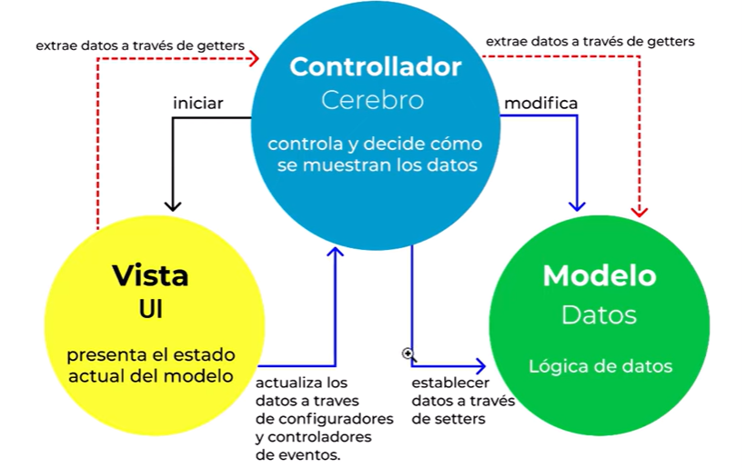

Es un patron de diseño que sirve para estructurar un proyecto dividiendo el codigo en tres grandes grupos segun la responsabilidad que tenga:
Contiene la funcionalidad central y los datos.
En este grupo deberiamos colocar todo el codigo que se encarge de conectarse a la base de datos.
Por ejemplo: el codigo para crear un nuevo registro, o para editarlo, o para todas las demas tareas cuya responsabilidad giren en torno a la base de datos.
Muestra la información al usuario, siempre es posible definir una o más vistas para una misma aplicación.
Aqui va el codigo HTML, CSS, y JS que creara la UI de la aplicacion... aqui va el frontend.
Maneja la entrada del usuario. Esto se hace para separar las representaciones internas de la información de las formas en que se presenta y se acepta la información del usuario. De esta manera se desacopla los componentes y permite una reutilización eficiente del código.
Los controladores funcionan como el cerebro de la aplicacion: en ellos vamos a colocar la logica del negocio.
Por ejemplo: si el usuario ingresa una url vamos a asignarle esa direccion a cierto controlador para que decida que contenido mostrar. En el caso de que la vista se comunique con el controlador para mostrar el contenido de una url, el controlador va a llamar al modelo para obtener los datos nesesarios, y luego se la va a pasar a la vista correspondiente para que ella finalmente le muestre el resultado al usuario.
La funcion del controlador no es hacer consultas a la base de datos, ni escribir codigo HTML. Su funcion es dirigir el flujo de la informacion haciendo de intermediario entre la vista y el modelo.